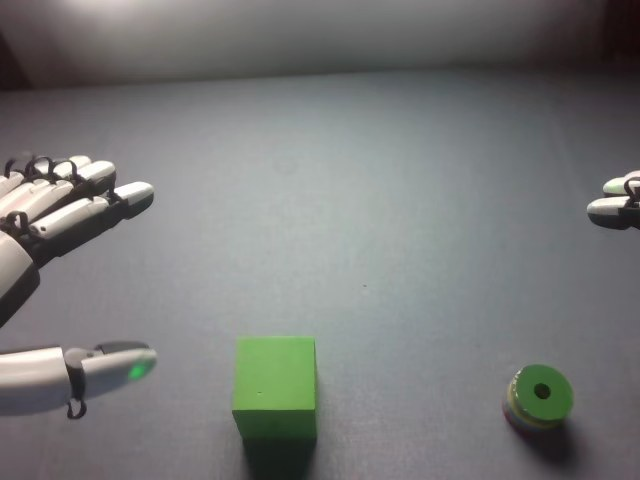

RoboCOIN · Airbot MMK2 · stack_block/episode_000009
Episode 000009

Annotation
From the dedicated visual review of this video (humanoid_action_v1). Plain text · JSON
Observed outcome
- Status
success
- Description
The green cube ends upright on the table near the centre of the view; the striped green cylinder stands upright on the cube's top face with its hole facing up and appears centred and stable at frame 190. Both hands are withdrawn (left open at the left edge, right mostly out of view at the upper right). No drop, no regrasp.
Hand roles
- Left
Acts first (frames about 14-84). Closes the palm/fingers over the top of the green cube with the thumb beneath its front, lifts it, carries it away and toward the table centre, lowers it, releases it at about frames 78-84, then withdraws to the left edge, open and still for the rest of the clip; it does not touch the cylinder or the stack.
- Right
Idle at the right edge (fingertips only visible) until about frame 82. Then approaches the green striped cylinder, curls its fingers and thumb around the side (frames 98-118), lifts it at about frame 120-124 (cylinder tilted in the grip), carries it over the cube, lowers it onto the cube's top face (about frames 144-150), releases it (about frames 156-166), hovers briefly, and withdraws toward the upper right (frames 176-190).
Coordination
Strictly sequential, no hand-to-hand transfer and no overlapping manipulation. The left hand finishes setting the cube down and starts withdrawing (about frames 80-88) before the right hand comes in toward the cylinder (about frames 84-96); the right hand then stacks the cylinder onto the cube the left hand placed. The left hand provides no support during stacking.
Robot-side evidence
- Head camera looks forward over the table; the hand entering from the image-left edge acts first and is the robot's left hand, and the hand at the image-right edge is the right hand.
- Parquet telemetry: eef_sim_pose_state holds two end-effector poses (columns 0-5 and 6-11). The first has y = +0.21 at frame 0, drops to about +0.03 by frame 60-70 (left-hand cube transport) and returns to about +0.17 by frame 100-120, then stays almost still; the second has y = -0.205, stays still until about frame 70, and then moves to y of about +0.03 by frames 150-170 (right-hand stacking) before returning to -0.12 by frame 190. With x forward, positive y is robot-left and negative y is robot-right.
- Wrist cameras: cam_left_wrist_rgb sees the green cube close to the hand at frame 40 (the cube is being held), and cam_right_wrist_rgb sees the striped cylinder in the hand at frame 130.
- The Parquet column names do not label the two poses by side, so the pose-column to side mapping rests on the y-sign convention and its agreement with the head-camera and wrist-camera views.
Chronology
| Frames | Observation |
|---|---|
| 0–12 | Initial frame: robot-left hand (image left) is open, fingers pointing right and a thumb extended at the lower left edge; robot-right hand (image right) is only a pair of fingertips at the right edge. A green cube sits near the bottom centre-left (x about 275 px, y about 400 px) and a striped green cylinder (green top with hole, blue/yellow/white bands on the side) lies at the lower right. The left hand advances toward the cube and rotates down; the right hand stays at the right edge. |
| 14–26 | Left hand lowers beside and over the cube: the palm and fingers come to rest on top of the cube while the thumb passes under its front side. By about frame 24 the cube is gripped between the palm/fingers above and the thumb below. |
| 28–46 | Left hand holds the cube against its palm and starts lifting; the cube is raised and tilts in the grip (frames 36-46) with its shadow separating from it, while the forearm extends into view. The right hand stays at the right edge. |
| 48–70 | Left hand carries the cube up and away from the camera, rightward toward the table centre, still lifted (shadow clearly below it at frames 48-66); it begins to lower the cube about frames 68-72. At frames 54-70 the right hand's fingertips shift slightly at the right edge but do not approach the cylinder. |
| 72–84 | Left hand sets the cube down on the table near the table centre (resting by about frame 74-78, hand still beside and above it, thumb beneath) and releases it; by frame 80-84 the thumb backs off and the cube is free on the table. The right hand begins to enter from the right edge around frame 82-84. |
| 86–96 | Left hand withdraws toward the left edge and stops with fingers open and thumb extended (it stays still and open until the end). The cube rests on the table slightly right of image centre and further from the camera than at the start. Right hand moves inward and down with fingers extended toward the cylinder. |
| 98–118 | Right hand reaches the cylinder at the lower right, fingers curling over its side and the thumb coming beside it; the cylinder is still on the table and partly occluded (frames 100-118). The finger closure is slow. |
| 120–134 | Right hand lifts the cylinder off the table (visible tilted in the fingers at frame 124, stripes facing the camera) and carries it left toward the cube while maintaining contact. |
| 136–148 | Right hand carries the cylinder, still tilted in the grip, to the cube's upper right (frame 140), then over the cube and lowers it onto the cube's top face with the thumb/lower finger on its side (frames 144-148). |
| 150–166 | Cylinder is on the cube's top face, held by the right hand (frames 150-160); the fingers loosen and release, and by frame 164-166 the cylinder stands upright on the cube while the hand moves up and away from it. |
| 168–190 | Right hand hovers above the stack (168-176), then lifts and withdraws toward the upper right (178-190), ending with only its fingers at the top-right edge; the thumb passes out at the right in blur at frames 184-190. The cylinder stands upright with its hole facing up on the cube at the table centre (frame 190); the left hand is open at the left edge. |
Clip selection
Complete single-task clip retained: left hand moves the cube to the table centre, then right hand stacks the cylinder on it. Both phases belong to one stacking task, so the full 191-frame sequence is kept without cropping or first_substep splitting.
Differences from the publisher annotation
- Publisher text matches the visible task and sides (left hand: square block to the centre; right hand: cylinder on top).
- Scene annotation 'The green block is in the center' is not quite right at frame 0: the cube is near the bottom of the view, centre-left, and is moved to the table centre by the left hand; the striped green cylinder at the lower right is not mentioned.
- Subtask timing differs: 'Grasp ... with the left gripper' covers frames 0-37, but the palm/thumb grip is established at about frame 24 and the lift is already underway by 28-36. 'Place ... on the center of the table' (38-78) actually includes lifting and carrying the cube (to about frame 70); release is at about frames 78-84.
- 'Grasp the green cylindrical build blocks with the right gripper' (79-114) mixes the right-hand approach (about 82-98) with a slow finger closure (98-118); the lift of the cylinder starts about frame 120, inside the publisher's 'Place' phase (115-168).
- 'End' (169-190) starts after the visible release (about 156-166); frames 168-176 are the right hand hovering and 178-190 its withdrawal.
- Source subtask labels say 'gripper' while the hands are five-finger dexterous hands; the prompt uses hand wording.
- The publisher calls the objects 'square building blocks' (plural) and 'cylindrical building blocks'; one cube and one striped cylinder are present.
Uncertainties
- Exact finger-level grasp of the cube by the left hand is partly occluded by the hand; it is described as palm/fingers on top with the thumb beneath the front.
- Right-hand finger positions around the cylinder during frames 98-118 are occluded by the hand and cylinder; the lift moment is estimated at about frames 120-124.
- Exact frame at which the right hand stops touching the cylinder is around 160-166 because of the hand occluding the contact and mild blur.
- The moment the cube touches the table (about frames 72-78) is partly hidden by the hand; the cube's end position is near, but not necessarily exactly at, the view centre.
- Robot-relative left/right rests on head-view geometry, y-sign of the end-effector poses, and wrist-camera content, not on published pose column names.
Complete review record action_review.json
{
"prompt_protocol": "humanoid_action_v1",
"prompt_protocol_note": "Applied by analogy: this episode is a dual-arm Airbot MMK2 with five-finger dexterous hands, not a Humanoid Everyday or NVIDIA GR1 video. The humanoid_action_v1 rules (robot-relative side, per-hand roles, coordination, actual end state, shared constraint sentence, complete single-task clip) were used as written.",
"prompt_provenance": "visually_authored_from_video_and_initial_frame",
"dataset": "RoboCOIN/Airbot_MMK2_stack_block",
"task": "stack_block",
"episode_id": "episode_000009",
"generation_camera": "cam_head_rgb (robot first-person head camera)",
"source_video": "../../original/videos/chunk-000/observation.images.cam_head_rgb/episode_000009.mp4",
"generation_video": "../video.mp4",
"conditioning_first_frame": "../first_frame.png",
"action_prompt": "../actiongeneration_prompt.txt",
"source_frame_count": 191,
"fps": 30,
"resolution": {
"width": 640,
"height": 480
},
"selected_source_frame_start": 0,
"selected_source_frame_end_exclusive": 191,
"selection_reason": "Complete single-task clip retained: left hand moves the cube to the table centre, then right hand stacks the cylinder on it. Both phases belong to one stacking task, so the full 191-frame sequence is kept without cropping or first_substep splitting.",
"usable_prompt": "The robot's left hand, on the left side of the view, closes its fingers over the green cube with the thumb beneath it, lifts it, carries it toward the table center, sets it down and releases it. The robot's right hand then wraps its fingers around the striped green cylinder, lifts it, carries it over the cube, lowers it upright onto the cube's top face and releases it, leaving the cylinder stacked on the cube. Keep the camera fixed; preserve robot geometry, physically valid joint motion, and normal gripper opening and closing.",
"chronology": [
{
"frames": [
0,
12
],
"observation": "Initial frame: robot-left hand (image left) is open, fingers pointing right and a thumb extended at the lower left edge; robot-right hand (image right) is only a pair of fingertips at the right edge. A green cube sits near the bottom centre-left (x about 275 px, y about 400 px) and a striped green cylinder (green top with hole, blue/yellow/white bands on the side) lies at the lower right. The left hand advances toward the cube and rotates down; the right hand stays at the right edge."
},
{
"frames": [
14,
26
],
"observation": "Left hand lowers beside and over the cube: the palm and fingers come to rest on top of the cube while the thumb passes under its front side. By about frame 24 the cube is gripped between the palm/fingers above and the thumb below."
},
{
"frames": [
28,
46
],
"observation": "Left hand holds the cube against its palm and starts lifting; the cube is raised and tilts in the grip (frames 36-46) with its shadow separating from it, while the forearm extends into view. The right hand stays at the right edge."
},
{
"frames": [
48,
70
],
"observation": "Left hand carries the cube up and away from the camera, rightward toward the table centre, still lifted (shadow clearly below it at frames 48-66); it begins to lower the cube about frames 68-72. At frames 54-70 the right hand's fingertips shift slightly at the right edge but do not approach the cylinder."
},
{
"frames": [
72,
84
],
"observation": "Left hand sets the cube down on the table near the table centre (resting by about frame 74-78, hand still beside and above it, thumb beneath) and releases it; by frame 80-84 the thumb backs off and the cube is free on the table. The right hand begins to enter from the right edge around frame 82-84."
},
{
"frames": [
86,
96
],
"observation": "Left hand withdraws toward the left edge and stops with fingers open and thumb extended (it stays still and open until the end). The cube rests on the table slightly right of image centre and further from the camera than at the start. Right hand moves inward and down with fingers extended toward the cylinder."
},
{
"frames": [
98,
118
],
"observation": "Right hand reaches the cylinder at the lower right, fingers curling over its side and the thumb coming beside it; the cylinder is still on the table and partly occluded (frames 100-118). The finger closure is slow."
},
{
"frames": [
120,
134
],
"observation": "Right hand lifts the cylinder off the table (visible tilted in the fingers at frame 124, stripes facing the camera) and carries it left toward the cube while maintaining contact."
},
{
"frames": [
136,
148
],
"observation": "Right hand carries the cylinder, still tilted in the grip, to the cube's upper right (frame 140), then over the cube and lowers it onto the cube's top face with the thumb/lower finger on its side (frames 144-148)."
},
{
"frames": [
150,
166
],
"observation": "Cylinder is on the cube's top face, held by the right hand (frames 150-160); the fingers loosen and release, and by frame 164-166 the cylinder stands upright on the cube while the hand moves up and away from it."
},
{
"frames": [
168,
190
],
"observation": "Right hand hovers above the stack (168-176), then lifts and withdraws toward the upper right (178-190), ending with only its fingers at the top-right edge; the thumb passes out at the right in blur at frames 184-190. The cylinder stands upright with its hole facing up on the cube at the table centre (frame 190); the left hand is open at the left edge."
}
],
"anatomical_side_evidence": [
"Head camera looks forward over the table; the hand entering from the image-left edge acts first and is the robot's left hand, and the hand at the image-right edge is the right hand.",
"Parquet telemetry: eef_sim_pose_state holds two end-effector poses (columns 0-5 and 6-11). The first has y = +0.21 at frame 0, drops to about +0.03 by frame 60-70 (left-hand cube transport) and returns to about +0.17 by frame 100-120, then stays almost still; the second has y = -0.205, stays still until about frame 70, and then moves to y of about +0.03 by frames 150-170 (right-hand stacking) before returning to -0.12 by frame 190. With x forward, positive y is robot-left and negative y is robot-right.",
"Wrist cameras: cam_left_wrist_rgb sees the green cube close to the hand at frame 40 (the cube is being held), and cam_right_wrist_rgb sees the striped cylinder in the hand at frame 130.",
"The Parquet column names do not label the two poses by side, so the pose-column to side mapping rests on the y-sign convention and its agreement with the head-camera and wrist-camera views."
],
"arm_roles": {
"left": "Acts first (frames about 14-84). Closes the palm/fingers over the top of the green cube with the thumb beneath its front, lifts it, carries it away and toward the table centre, lowers it, releases it at about frames 78-84, then withdraws to the left edge, open and still for the rest of the clip; it does not touch the cylinder or the stack.",
"right": "Idle at the right edge (fingertips only visible) until about frame 82. Then approaches the green striped cylinder, curls its fingers and thumb around the side (frames 98-118), lifts it at about frame 120-124 (cylinder tilted in the grip), carries it over the cube, lowers it onto the cube's top face (about frames 144-150), releases it (about frames 156-166), hovers briefly, and withdraws toward the upper right (frames 176-190)."
},
"coordination": "Strictly sequential, no hand-to-hand transfer and no overlapping manipulation. The left hand finishes setting the cube down and starts withdrawing (about frames 80-88) before the right hand comes in toward the cylinder (about frames 84-96); the right hand then stacks the cylinder onto the cube the left hand placed. The left hand provides no support during stacking.",
"observed_outcome": {
"status": "success",
"description": "The green cube ends upright on the table near the centre of the view; the striped green cylinder stands upright on the cube's top face with its hole facing up and appears centred and stable at frame 190. Both hands are withdrawn (left open at the left edge, right mostly out of view at the upper right). No drop, no regrasp."
},
"source_annotation": {
"task_prompt": "place the square building blocks in the center with left hand and put the cylindrical building blocks on top with right hand.",
"scene_annotation": "The green block is in the center, The red block is not visible, The blue block is not visible, The yellow block is not visible, The purple block is not visible, The glasses case is not visible",
"subtask_timeline": [
{
"frames": [
0,
37
],
"label": "Grasp the green build blocks with the left gripper"
},
{
"frames": [
38,
78
],
"label": "Place the green build blocks on the center of the table with the left gripper"
},
{
"frames": [
79,
114
],
"label": "Grasp the green cylindrical build blocks with the right gripper"
},
{
"frames": [
115,
168
],
"label": "Place the green cylindrical build blocks on the green build blocks with the right gripper"
},
{
"frames": [
169,
190
],
"label": "End"
}
]
},
"source_annotation_discrepancies": [
"Publisher text matches the visible task and sides (left hand: square block to the centre; right hand: cylinder on top).",
"Scene annotation 'The green block is in the center' is not quite right at frame 0: the cube is near the bottom of the view, centre-left, and is moved to the table centre by the left hand; the striped green cylinder at the lower right is not mentioned.",
"Subtask timing differs: 'Grasp ... with the left gripper' covers frames 0-37, but the palm/thumb grip is established at about frame 24 and the lift is already underway by 28-36. 'Place ... on the center of the table' (38-78) actually includes lifting and carrying the cube (to about frame 70); release is at about frames 78-84.",
"'Grasp the green cylindrical build blocks with the right gripper' (79-114) mixes the right-hand approach (about 82-98) with a slow finger closure (98-118); the lift of the cylinder starts about frame 120, inside the publisher's 'Place' phase (115-168).",
"'End' (169-190) starts after the visible release (about 156-166); frames 168-176 are the right hand hovering and 178-190 its withdrawal.",
"Source subtask labels say 'gripper' while the hands are five-finger dexterous hands; the prompt uses hand wording.",
"The publisher calls the objects 'square building blocks' (plural) and 'cylindrical building blocks'; one cube and one striped cylinder are present."
],
"uncertainties": [
"Exact finger-level grasp of the cube by the left hand is partly occluded by the hand; it is described as palm/fingers on top with the thumb beneath the front.",
"Right-hand finger positions around the cylinder during frames 98-118 are occluded by the hand and cylinder; the lift moment is estimated at about frames 120-124.",
"Exact frame at which the right hand stops touching the cylinder is around 160-166 because of the hand occluding the contact and mild blur.",
"The moment the cube touches the table (about frames 72-78) is partly hidden by the hand; the cube's end position is near, but not necessarily exactly at, the view centre.",
"Robot-relative left/right rests on head-view geometry, y-sign of the end-effector poses, and wrist-camera content, not on published pose column names."
],
"inspection_coverage": {
"frames_decoded": 191,
"frames_sampled_in_contact_sheets": 96,
"sample_stride": 2,
"sampled_frame_indices": "0, 2, ..., 190 (every second decoded frame)",
"native_resolution_frames_inspected": [
0,
24,
56,
78,
100,
124,
140,
150,
166,
176,
190
],
"initial_png_inspected": true,
"initial_png_note": "generation input/first_frame.png inspected at native 640x480 after the full sequence; it matches decoded frame 0.",
"other_cameras_and_telemetry_used": [
"cam_left_wrist_rgb frames 40 and 130",
"cam_right_wrist_rgb frames 40 and 130",
"original parquet eef_sim_pose_state"
],
"temporary_images_location": "/tmp/rv_review/robocoin_episode_000009/ (deleted after review)"
},
"evidence_frame_indices": [
0,
24,
40,
56,
78,
84,
100,
124,
140,
150,
166,
176,
190
],
"review_completed_at": "2026-10-15T20:35:30Z",
"dedicated_review_agent": "review_robocoin_episode_000009"
}